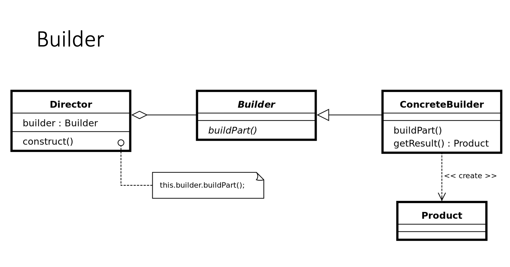
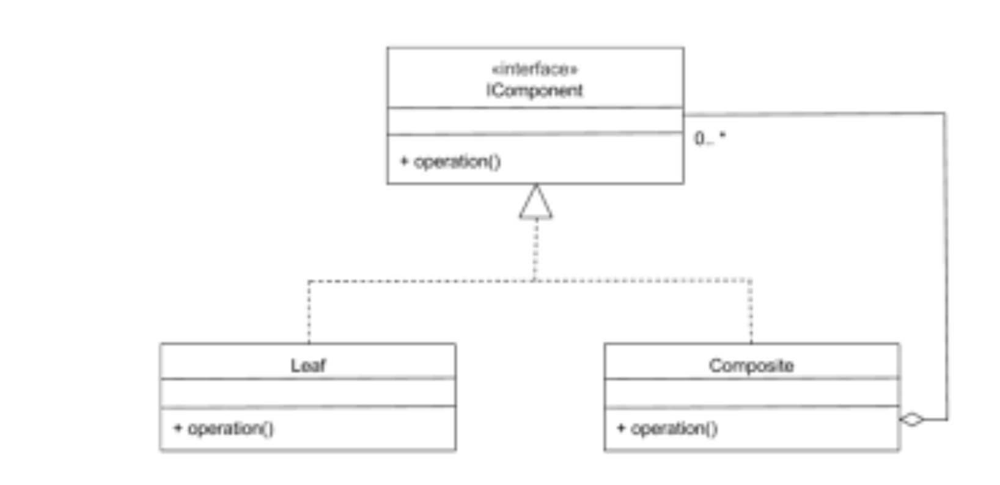
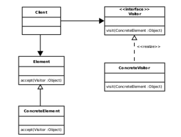
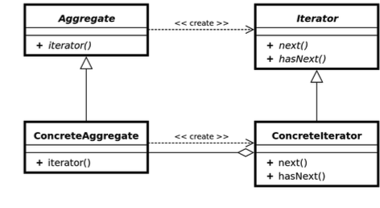

🏗️ PATTERN 1 : BUILDER
✅ Comment le reconnaître
Trucs et astuces :
- ✅ Sépare la construction d'un objet complexe de sa représentation.
- ✅ Une classe Director qui orchestre la construction.
- ✅ Une interface/classe abstraite Builder avec des méthodes de construction.
- ✅ Un ConcreteBuilder qui implémente les étapes de construction.
- ✅ Le produit final est obtenu via
getResult().
Phrase clé : "Je reconnais Builder car Lecteur (Director) utilise Fabriquant (ConcreteBuilder) pour construire progressivement un objet Partie (Product)."
📊 Schéma théorique
🖼️ Schéma de l'exercice

🔍 Correspondance Théorie / Exercice
| Participants théoriques | Noms utilisés dans le code | Explication |
|---|---|---|
| Director (Directeur) |
Lecteur |
Dirige le processus de construction en appelant les méthodes du Builder dans le bon ordre (lecture du fichier caractère par caractère). |
| Builder (Interface de construction) |
Interface implicite | Définit les méthodes de construction (ici implémentées directement dans Fabriquant). |
| ConcreteBuilder (Constructeur concret) |
Fabriquant |
Implémente la logique de construction : crée les Groupes et Valeurs, gère la hiérarchie avec une Pile. |
| Product (Produit) |
Partie(Groupe/Valeur) |
L'objet complexe résultant de la construction (structure composite hiérarchique). |
| getResult() | getResultat() |
Méthode pour récupérer le produit final après la construction. |
💻 Code principal (structure expliquée)
1. Le Director (Lecteur)
C'est lui qui orchestre la construction. Il lit le fichier et appelle les bonnes méthodes du Builder.
public class Lecteur {
private PushbackReader buffer;
private Fabriquant fabriquant = new Fabriquant();
public Partie construire() throws IOException {
int car;
while ((car = buffer.read()) != -1) {
if (car == '(') {
// Construction d'un groupe
fabriquant.construireGroupe();
} else if (car == ')') {
// Fermeture d'un groupe
fabriquant.fermerGroupe();
} else if (Character.isDigit((char) car)) {
// Construction d'une valeur
int nombre = // ... parsing du nombre
fabriquant.construireValeur(nombre);
}
}
return fabriquant.getResultat();
}
}2. Le ConcreteBuilder (Fabriquant)
Il construit progressivement la structure composite en utilisant une Pile pour gérer la hiérarchie.
public class Fabriquant {
private Pile pile = new PileImpl();
private Partie resultat;
private int niveau = 0;
// Méthode de construction : crée un nouveau groupe
public void construireGroupe() {
if (!pile.estVide()) {
Groupe sommet = (Groupe) pile.pop();
Groupe nouveau = new Groupe(..., ++niveau);
sommet.add(nouveau);
pile.push(sommet);
pile.push(nouveau);
} else {
Groupe nouveau = new Groupe(..., 0);
pile.push(nouveau);
resultat = nouveau;
}
}
// Méthode de construction : ferme le groupe courant
public void fermerGroupe() {
pile.pop();
niveau--;
}
// Méthode de construction : ajoute une valeur
public void construireValeur(int nombre) {
Valeur number = new Valeur(nombre, niveau + 1);
if (!pile.estVide()) {
Groupe sommet = (Groupe) pile.pop();
sommet.add(number);
pile.push(sommet);
} else {
resultat = number;
}
}
// Récupération du produit final
public Partie getResultat() {
return resultat;
}
}3. Le Product (Partie)
Le produit complexe résultant : une structure composite hiérarchique.
public interface Partie {
void demande(Traitement traitement);
int getNiveau();
}
// Peut être un Groupe (composite) ou une Valeur (leaf)4. Structure auxiliaire : La Pile
Le Builder utilise une Pile pour gérer les groupes imbriqués pendant la construction.
public interface Pile {
boolean estVide();
void push(Object n);
Object pop();
Object sommet();
}🌳 PATTERN 2 : COMPOSITE
✅ Comment le reconnaître
Trucs et astuces :
- ✅ Une interface commune pour les feuilles (objets simples) et les conteneurs (groupes).
- ✅ La classe conteneur (Composite) contient une liste de l'interface commune.
- ✅ On peut traiter un groupe comme un objet unique (Uniformité).
- ✅ Structure en arbre.
Phrase clé : "Je reconnais Composite car Groupe implémente Partie et contient une liste de Partie. Il traite les groupes et les valeurs de la même façon."
📊 Schéma théorique
🖼️ Schéma de l'exercice
🔍 Correspondance Théorie / Exercice
| Participants théoriques | Noms utilisés dans le code | Explication |
|---|---|---|
| Component (Interface Commune) |
Partie |
Définit les opérations communes (demande, getNiveau) pour les feuilles et les composites. |
| Leaf (Feuille) |
Valeur |
Représente les objets de base qui n'ont pas d'enfants. |
| Composite (Conteneur) |
Groupe |
Stocke les enfants (Vector parties) et implémente les opérations en les déléguant souvent aux enfants. |
| Operation() (Méthode métier) |
demande(Traitement t) |
La méthode commune appelée uniformément sur l'arbre. |
💻 Code principal (structure expliquée)
1. L'Interface Component (Partie)
C'est le contrat que tout le monde doit respecter. Elle permet de traiter les feuilles et les groupes de la même manière.
public interface Partie {
// Opération métier commune
void demande(Traitement traitement);
int getNiveau();
}2. Le Composite (Groupe)
C'est l'élément complexe. Il contient d'autres composants (sa liste d'enfants).
public class Groupe implements Partie {
// 1. La collection d'enfants (COMPOSITION)
// Elle est du type de l'interface 'Partie', donc elle peut contenir
// des Valeurs OU d'autres Groupes (récursivité).
private Vector parties = new Vector();
// 2. Méthode de gestion des enfants (spécifique au Composite)
public void add(Partie nouveau) {
parties.add(nouveau);
}
// 3. Implémentation de l'opération commune
// Ici, le Groupe se passe lui-même au traitement (voir Visitor)
public void demande(Traitement traitement) {
traitement.traiteGroupe(this);
}
}3. La Leaf (Valeur)
C'est l'élément simple. Il n'a pas de sous-éléments.
public class Valeur implements Partie {
private int nombre;
public Valeur(int nombre, int niveau) {
this.nombre = nombre;
}
// Pas de liste d'enfants, pas de méthode add() !
public void demande(Traitement traitement) {
traitement.traiteValeur(this);
}
}🕵️ PATTERN 3 : VISITOR
✅ Comment le reconnaître
Trucs et astuces :
- ✅ On veut ajouter des opérations (calculer total, afficher) sans modifier les classes de la structure.
- ✅ Une interface
Visitoravec des méthodesvisitConcretA(),visitConcretB(). - ✅ Une méthode
accept(Visitor)dans les éléments de la structure. - ✅ Mécanisme de Double Dispatch (l'objet rappelle le visiteur en lui donnant son type réel).
Phrase clé : "Je reconnais Visitor grâce à l'interface Traitement et la méthode demande(Traitement) qui effectue le double dispatch."
📊 Schéma théorique
🖼️ Schéma de l'exercice
🔍 Correspondance Théorie / Exercice
| Participants théoriques | Noms utilisés dans le code | Explication |
|---|---|---|
| Visitor (Interface Visiteur) |
Traitement |
Définit les signatures de visite pour chaque type concret d'élément (traiteValeur, traiteGroupe). |
| ConcreteVisitor (Visiteur Concret) |
TotaliseurListeur |
Implémente l'algorithme spécifique (ex: sommer les valeurs, afficher le texte). |
| Element (Interface visitable) |
Partie |
Définit la méthode accept (ici demande). |
| accept() | demande(Traitement) |
La porte d'entrée pour le visiteur. |
💻 Code principal (structure expliquée)
1. L'interface Visitor (Traitement)
public interface Traitement {
// Une méthode par type concret à visiter
// C'est ici qu'on gère le "Double Dispatch"
void traiteValeur(Valeur unique);
void traiteGroupe(Groupe plusieurs);
}2. Le Concrete Visitor (Totaliseur)
Contient la logique métier (calculer la somme) séparée de la structure de données.
public class Totaliseur implements Traitement {
private int sommeDesValeurs = 0;
// Logique pour une Valeur
public void traiteValeur(Valeur valeur) {
sommeDesValeurs += valeur.getValeur();
}
// Logique pour un Groupe
public void traiteGroupe(Groupe groupe) {
// Le visiteur est responsable de parcourir les enfants si nécessaire
Iterator it = groupe.getParties();
while (it.hasNext()) {
Partie p = (Partie) it.next();
// On repasse le visiteur (this) aux enfants
p.demande(this);
}
}
}🔄 PATTERN 4 : ITERATOR
✅ Comment le reconnaître
Trucs et astuces :
- ✅ Une méthode qui retourne un objet
Iterator(ou similaire). - ✅ Permet de parcourir les éléments d'une collection sans exposer la structure interne.
- ✅ L'itérateur fournit les méthodes
hasNext()etnext(). - ✅ Sépare la logique de parcours de la structure de données.
Phrase clé : "Je reconnais Iterator grâce à la méthode getParties() qui retourne un Iterator pour parcourir les éléments sans exposer le Vector interne."
📊 Schéma théorique
🖼️ Schéma de l'exercice
🔍 Correspondance Théorie / Exercice
| Participants théoriques | Noms utilisés dans le code | Explication |
|---|---|---|
| Aggregate (Interface de collection) |
Interface implicite | Définit la méthode pour créer un itérateur (ici implémentée directement dans Groupe). |
| ConcreteAggregate (Collection concrète) |
Groupe |
Contient la collection réelle (Vector parties) et fournit un itérateur via getParties(). |
| Iterator (Interface d'itération) |
Iterator (Java) |
Interface standard Java avec hasNext() et next(). |
| ConcreteIterator (Itérateur concret) |
Collections.unmodifiableList().iterator() |
Itérateur créé automatiquement par Java, empêche les modifications pendant le parcours. |
💻 Code principal (structure expliquée)
1. Le ConcreteAggregate (Groupe)
La classe qui contient la collection et fournit l'itérateur.
public class Groupe implements Partie {
// La collection interne (cachée de l'extérieur)
private Vector parties = new Vector();
// Méthode qui retourne un itérateur
public Iterator getParties() {
// Crée un itérateur en lecture seule
return Collections.unmodifiableList(parties).iterator();
}
// Méthode pour ajouter des éléments
public void add(Partie nouveau) {
parties.add(nouveau);
}
}2. Utilisation de l'Iterator
Exemple d'utilisation dans les visiteurs (Totaliseur, Listeur) :
public void traiteGroupe(Groupe groupe) {
// Récupère l'itérateur
Iterator it = groupe.getParties();
// Parcourt les éléments
while (it.hasNext()) {
Partie p = (Partie) it.next();
p.demande(this);
}
}3. Avantages
- 🔒 Encapsulation : Le
Vectorinterne reste privé - 🛡️ Protection :
unmodifiableList()empêche les modifications - 🔄 Standardisation : Utilise l'interface
Iteratorstandard de Java - 🎯 Simplicité : Interface uniforme pour parcourir n'importe quelle collection
🎯 PATTERN 5 : STRATEGY
✅ Comment le reconnaître
Trucs et astuces :
- ✅ Une interface qui définit une famille d'algorithmes interchangeables.
- ✅ Le contexte délègue l'exécution à une stratégie passée en paramètre.
- ✅ Permet de changer l'algorithme dynamiquement sans modifier le contexte.
- ✅ Évite les multiples
if/elseouswitchpour choisir un comportement.
Phrase clé : "Je reconnais Strategy car Partie (Context) délègue le traitement à Traitement (Strategy) passé en paramètre dans demande()."
📊 Schéma théorique

🖼️ Schéma de l'exercice
🔍 Correspondance Théorie / Exercice
| Participants théoriques | Noms utilisés dans le code | Explication |
|---|---|---|
| Context (Contexte) |
Partie(Valeur, Groupe) |
Délègue l'exécution à la stratégie reçue via demande(Traitement). |
| Strategy (Interface de stratégie) |
Traitement |
Définit l'interface commune pour tous les algorithmes de traitement. |
| ConcreteStrategyA | Totaliseur |
Implémente l'algorithme de calcul (somme, moyenne, comptage). |
| ConcreteStrategyB | Listeur |
Implémente l'algorithme d'affichage simple. |
| ConcreteStrategyC | ListeurNom |
Implémente l'algorithme d'affichage avec noms de groupes. |
💻 Code principal (structure expliquée)
1. Le Context (Partie)
L'interface qui accepte différentes stratégies de traitement.
public interface Partie {
// Méthode qui accepte une stratégie
void demande(Traitement traitement);
int getNiveau();
}2. Implémentations concrètes du Context
Valeur (ConcreteContext) :
public class Valeur implements Partie {
private int nombre;
public void demande(Traitement traitement) {
// Délègue à la stratégie
traitement.traiteValeur(this);
}
}Groupe (ConcreteContext) :
public class Groupe implements Partie {
private Vector parties = new Vector();
public void demande(Traitement traitement) {
// Délègue à la stratégie
traitement.traiteGroupe(this);
}
}3. L'interface Strategy (Traitement)
Définit les méthodes que toutes les stratégies doivent implémenter.
public interface Traitement {
void traiteValeur(Valeur unique);
void traiteGroupe(Groupe plusieurs);
}4. Les ConcreteStrategy
Totaliseur - Stratégie de calcul :
public class Totaliseur implements Traitement {
private int sommeDesValeurs = 0;
private int nombreDeValeurs = 0;
public void traiteValeur(Valeur valeur) {
nombreDeValeurs++;
sommeDesValeurs += valeur.getValeur();
}
public void traiteGroupe(Groupe groupe) {
Iterator it = groupe.getParties();
while (it.hasNext()) {
Partie p = (Partie) it.next();
p.demande(this); // Propagation récursive
}
}
}Listeur - Stratégie d'affichage simple :
public class Listeur implements Traitement {
public void traiteValeur(Valeur valeur) {
System.out.print(valeur.getValeur() + " ");
}
public void traiteGroupe(Groupe groupe) {
System.out.print("( ");
Iterator it = groupe.getParties();
while (it.hasNext()) {
Partie p = (Partie) it.next();
p.demande(this);
}
System.out.print(") ");
}
}5. Utilisation dynamique des stratégies
// Dans Main.java
Partie partie = lecteur.construire();
// On change de stratégie dynamiquement
partie.demande(new Listeur()); // Affichage simple
partie.demande(new Totaliseur()); // Calculs
partie.demande(new ListeurNom()); // Affichage avec noms🔄 Strategy vs Visitor
Dans cet exercice, Strategy et Visitor sont combinés !
- Aspect Strategy : La méthode
demande()accepte différentes stratégies de traitement interchangeables. - Aspect Visitor : Le double dispatch permet d'exécuter la bonne méthode selon le type réel (Valeur ou Groupe).
💡 En résumé : demande(Traitement) est à la fois accept(Visitor) et executeStrategy(Strategy) !
💡 Conseils Supplémentaires
⚠️ Pièges à éviter
Composite vs Decorator
- Composite : Relation 1-N (Arbre). Le conteneur a une liste d'enfants. Uniformité.
- Decorator : Relation 1-1 (Enveloppe). Ajoute du comportement dynamiquement.
Visitor vs Strategy
- Visitor : Focus sur le double dispatch pour exécuter la bonne opération selon le type réel.
- Strategy : Focus sur le changement d'algorithme de manière interchangeable.
- Dans cet exercice : Les deux patterns sont combinés dans
demande(Traitement)!
Visitor vs Iterator
- Iterator : Sert juste à parcourir la structure séquentiellement.
- Visitor : Sert à exécuter une opération différente selon le type réel de l'objet.
💡 Récapitulatif
Dans cet exercice, cinq patterns travaillent ensemble :
- Builder : Construit progressivement la structure lors de la lecture du fichier
- Composite : Organise la structure en arbre (Groupe et Valeur)
- Visitor : Permet d'ajouter des opérations sans modifier la structure (double dispatch)
- Iterator : Permet de parcourir les éléments sans exposer leur implémentation interne
- Strategy : Permet de changer dynamiquement l'algorithme de traitement (Totaliseur, Listeur, ListeurNom)
Note : Strategy et Visitor se combinent dans la méthode demande(Traitement) !